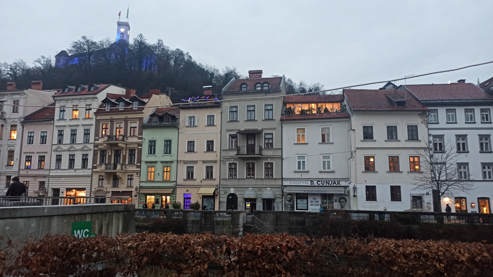
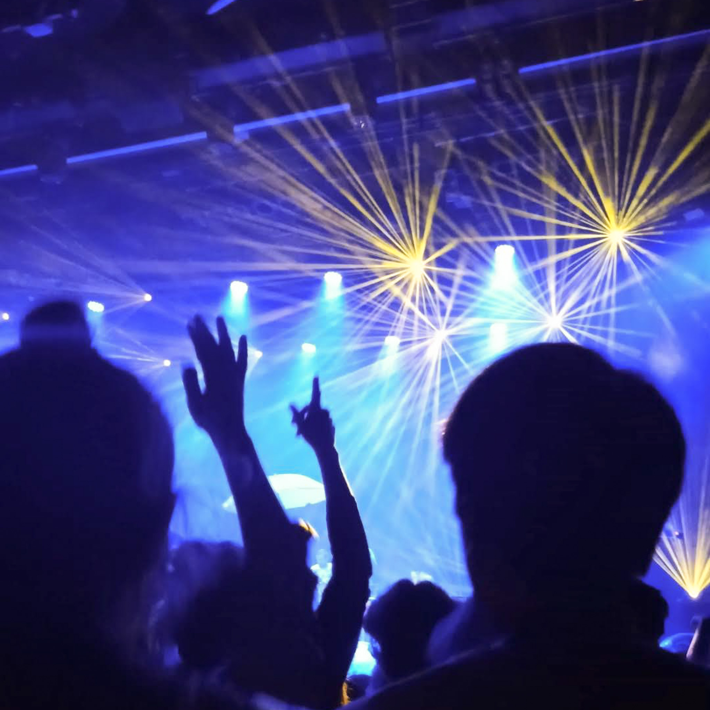
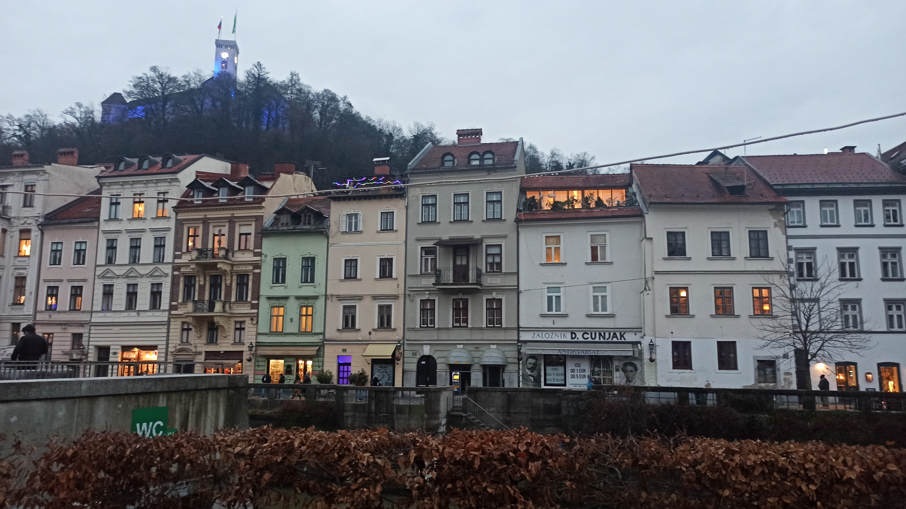
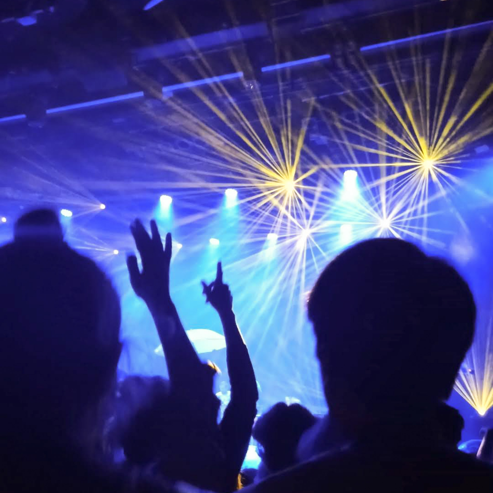

the home of the best pad thai in the world (roza slon) and the go-to destination of countless day trips.
I don’t remember the first time we met, might have been an elementary school trip. I do however remember going to a laibach concert in seventh grade - my first concert ever, probably not the most suiting one for a child, but upon hearing “EUROPE IS FALLING APART”, something shifted in me and all chakras were in alignment. the most recent memories have been tivoli strolls, gigs in kino šiška, schweppes bitter lemon, giggling at the pretentiousness of ljubljana accent (”ma rabš urečko al neki?”) and keeping a list of all slovenian celebrity and influencer sightings that day.
you are also the place that I associate with meeting penpals - anni came from finland in 2017 and melike from turkey in 2023. it was so cute (and so surreal) to meet online friends and learn that pixels on the screen also have a physical form:)
that’s all for now - ma se vidmo še kdej.
 


